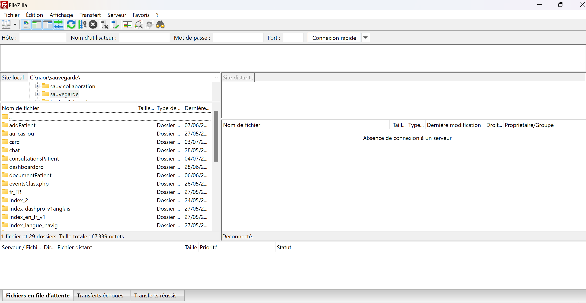

Stage Naor
Informations sur l'entreprise
Nom de l'entreprise : Naor
Effectif : Environ 10 salariés
Taille : PME
Forme juridique SAS
Secteur d'activité : Recherche-developpement en biotechnologie
Nom domaine : Naor
Naor est une entreprise innovante dans le domaine de la biotechnologie spécialisée en recherche et développement. Son objectif principal est de concevoir des solutions novatrices qui répondent aux besoins de santé actuels et futurs. Grâce à ses recherches, Naor cherche à transformer les découvertes scientifiques en applications concrètes qui améliorent la qualité de vie et contribuent à des avancées médicales significatives. En combinant expertise scientifique et technologies de pointe, l'entreprise s'engage à fournir des produits et services à la fois sûrs, efficaces, et accessibles, avec une ambition de développement international.
Mission :
Durant mon second stage chez Naor Innov, j'ai eu plusieurs missions notamment :
À mon arrivée, il m'a été demandé, durant les premières semaines, de traduire les pages qui ont été ajoutées depuis.
J'ai dû également apporter des modifications sur le design du site. J'ai dû toucher au CSS et à l'emplacement de certains éléments, mais également modifier des éléments.
Enfin, on m'a demandé de régler des bugs au niveau de certaines fonctionnalités qui ne marchaient pas sur le site (boutons, etc...).
Moyens utilisés :
Pour accomplir cette tâche, j'ai eu accès aux fichiers PHP stockés sur leur serveur distant grâce au logiciel FileZilla , qui me permettait de les modifier à distance.
{kind=link}
Les languages utilisés étaient : PHP, JavaScript, HTML, CSS.
Difficultés rencontrées :
Ma principale difficulté a été de me retrouver, de travailler et de débuguer à partir d'un code qui m'était totalement inconnu et qui avait été écrit par d'autres personnes. Il fallait donc s'adapter à leur manière de coder, comprendre leur raisonnement et apporter des changements qui respectaient leur logique.
Résultats :
{kind=link}
Voici une des pages ajoutées qu’il m’a été demandé de traduire.
{kind=link}
{kind=link}
Parmi les bugs à corriger, certains boutons de suppression ou d'édition ne fonctionnaient pas correctement. On m'a alors demandé de les débuguer.
{kind=link}
{kind=link}
J'ai, par exemple, dû améliorer le design des pop-ups, transformer des barres de recherche en sélecteurs...
Conclusion :
Ce stage m’a permis de renforcer mes compétences techniques, notamment en matière de débogage et d’optimisation du code. J’ai appris à m’adapter à un environnement de développement existant, à analyser les raisonnements et les choix techniques d’autres développeurs, et à m’intégrer dans un projet en cours. Cette expérience m’a également aidée à développer ma capacité àidentifier et résoudre des problématiques complexes tout en veillant à respecter la logique et la structure du code déjà en place. Enfin, elle m’a offert une meilleure compréhension des bonnes pratiques en développement et m’a rendue plus autonome dans l’approche et la résolution des défis techniques.